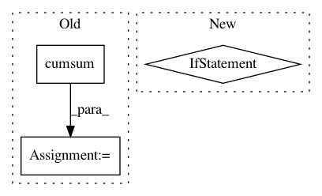

e52e9c8d7536b6315da655164951060642a52707,sklearn/cluster/dbscan_.py,DBSCAN,fit,#DBSCAN#Any#Any#Any#,284
Before Change
X_mask = X.data <= self.eps
masked_indices = X.indices.astype(np.intp, copy=False)[X_mask]
masked_indptr = np.concatenate(([0], np.cumsum(X_mask)))
masked_indptr = masked_indptr[X.indptr[1:-1]]
// split into rows
neighborhoods[:] = np.split(masked_indices, masked_indptr)
else:
After Change
// Calculate neighborhood for all samples. This leaves the original
// point in, which needs to be considered later (i.e. point i is in the
// neighborhood of point i. While True, its useless information)
if self.metric == "precomputed" and sparse.issparse(X):
// set the diagonal to explicit values, as a point is its own
// neighbor
with warnings.catch_warnings():
warnings.simplefilter("ignore", sparse.SparseEfficiencyWarning)
X.setdiag(X.diagonal()) // XXX: modifies X"s internals in-place
neighbors_model = NearestNeighbors(
radius=self.eps, algorithm=self.algorithm,
leaf_size=self.leaf_size, metric=self.metric,
metric_params=self.metric_params, p=self.p, n_jobs=self.n_jobs)
In pattern: SUPERPATTERN
Frequency: 3
Non-data size: 3
Instances
Project Name: scikit-learn/scikit-learn
Commit Name: e52e9c8d7536b6315da655164951060642a52707
Time: 2019-09-18
Author: tom.dupre-la-tour@m4x.org
File Name: sklearn/cluster/dbscan_.py
Class Name: DBSCAN
Method Name: fit
Project Name: jinfagang/tensorflow_poems
Commit Name: e24303de503ee56515e33fa4e9ff3ab05eede5b8
Time: 2018-06-03
Author: 30965609+Freakwill@users.noreply.github.com
File Name: compose_poem.py
Class Name:
Method Name: to_word
Project Name: havakv/pycox
Commit Name: 190d9b204a1a4798f0723c8d8d37ac5ac950909e
Time: 2019-05-08
Author: haavard.kvamme@gmail..com
File Name: pycox/models/deephit.py
Class Name: DeepHitSingle
Method Name: predict_survival_function